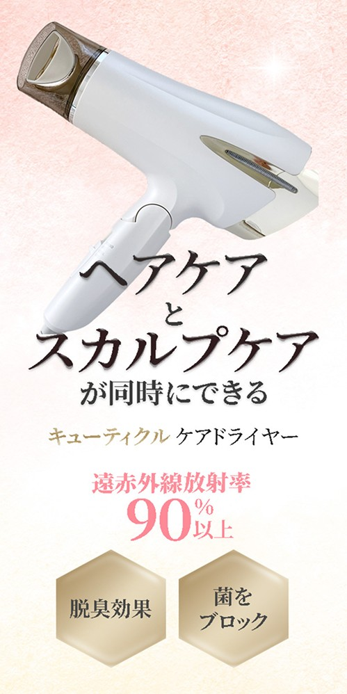

← Back to main page

ヘアケア商品
ターゲット
髪だけでなく頭皮まで同時にケアしたい20〜40代女性。価格より機能や付加価値でヘア家電を選ぶ、投資意欲のある層。
デザイン上の工夫
ピンクのグラデ背景で女性向けの清潔感と上品さを打ち出し、家電の無機質さを避けた。商品を上部に斜め配置し、下の余白で製品を主役に立てている。「ヘアケア」「スカルプケア」を筆文字風の太字で対比させ、最大の売りである「同時にできる」を文字の強弱で印象づけた。「90%以上」の数字を大きく見せて機能の根拠を可視化し、六角バッジで追加の訴求を補足している。